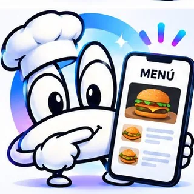

Coyoacán · Taxqueña · Coapa · CTM Culhuacán
Menú digital QR para cafeterías, fondas y restaurantes en la CDMX
Tu carta digital con tus fotos retocadas y tus precios, siempre actualizada. Tus clientes la abren con la cámara del celular y tú ya no tienes que reimprimir cada vez que cambias algo.
Cotizar por WhatsApp
Precios
Menú QR
$800 pago único
Tu carta digital con tus fotos retocadas y tus precios. Incluye hasta 15 platillos; cada platillo extra cuesta $30.
Paquete Mesa
$1,500 pago único
Menú QR (hasta 15 platillos) + tarjeta de redes sociales (también para reseñas en Google Maps) + ficha de Google Maps de regalo. Garantía de 7 días.
Ve todos los paquetes en la página de precios.
Qué incluye
- Incluye hasta 15 platillos; cada platillo extra cuesta $30.
- Tú nos das las fotos y nosotros las retocamos.
- Código QR listo para imprimir y poner en las mesas.
- Se abre con la cámara del celular, sin instalar nada.
- En el Paquete Mesa: tarjeta de redes sociales para que con un toque te dejen reseña en Google Maps y te sigan en Instagram, Facebook o TikTok.
- En el Paquete Mesa: tu ficha de Google Maps de regalo (horario, categoría, descripción, fotos y enlaces).
Para quién es
Cafeterías, restaurantes, fondas, taquerías, marisquerías y cualquier negocio de comida en Coyoacán, Taxqueña, Coapa y CTM Culhuacán.
Cómo trabajamos
- Nos escribes por WhatsApp o pasamos a tu negocio.
- Te mostramos cómo funciona y te decimos el precio exacto.
- Pagas 50% al aceptar, por transferencia o en efectivo.
- Lo dejamos listo, te enseñamos a usarlo y pagas el otro 50%.
Preguntas frecuentes
¿Cuánto cuesta un menú digital QR?
El Menú QR cuesta $800 en un solo pago e incluye hasta 15 platillos; cada platillo extra cuesta $30. El Paquete Mesa, con el menú, una tarjeta de redes sociales y tu ficha de Google de regalo, cuesta $1,500.
¿Quién toma las fotos de los platillos?
Tú nos das las fotos y nosotros las retocamos para que tu carta se vea bien.
¿Mis clientes tienen que descargar una app?
No. Escanean el código con la cámara del celular y el menú se abre en el navegador.
¿Qué pasa si cambio precios o platillos?
El menú es digital, así que se actualiza sin reimprimir nada.
¿Tiene garantía?
Garantía de 7 días. Si en los 7 días siguientes a la entrega tu servicio no funciona como te lo mostramos y no logramos corregirlo, te devolvemos lo que pagaste por ese servicio. No aplica cuando el problema se debe a materiales o accesos incorrectos o incompletos, a cambios hechos sin avisarnos, a fallas de plataformas externas (Google, redes sociales, WhatsApp) o a no renovar el dominio. Las tarjetas NFC con defecto de fabricación se reponen o se reembolsan. La garantía no cubre resultados de ventas, reseñas o seguidores.
¿Cómo se paga?
50% al aceptar y 50% al entregar, por transferencia o en efectivo. El Arranque Google se paga completo.
¿Tienes un negocio en Coyoacán, Taxqueña, Coapa o CTM Culhuacán? Escríbenos y te decimos qué te conviene.
Escribir por WhatsApp